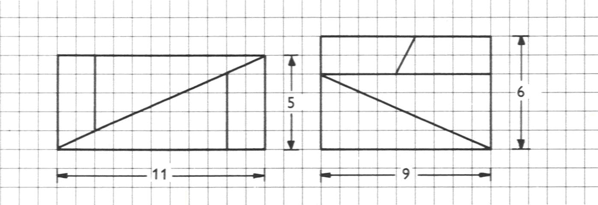
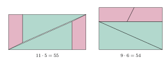
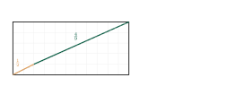
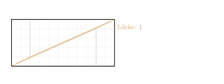

Aufgabe 6.6
Gemäss Zeichnung sind die beiden Rechtecke zerlegungsgleich. Dagegen sind die Masszahlen ihrer Inhalte verschieden. Was stimmt?

- Prüfen Sie die Steigungen der «Diagonalen» genau
- Liegen alle Punkte wirklich auf einer Geraden?
- Zeichnen Sie die Figur massstabsgetreu nach
- Wo könnte sich versteckte Fläche befinden?
Schritt 1: nachrechnen

Beide Rechtecke bestehen aus denselben vier Teilen: zwei rechtwinkligen Dreiecken mit den Katheten $9$ und $4$ und zwei Trapezen der Breite $2$ mit den parallelen Seiten $4$ und $5$. Zusammen haben sie den Inhalt $2\cdot 18 + 2\cdot 9 = 54$. Das passt zum rechten Rechteck, aber nicht zum linken mit $55$.
Schritt 2: die Steigungen vergleichen

Im linken Rechteck sollen die Kanten der Teile eine gerade Diagonale bilden. Die Trapeze steigen auf $2$ Häuschen um $1$, also mit $\frac{1}{2}$. Die Dreiecke steigen auf $9$ Häuschen um $4$, also mit $\frac{4}{9}$. Weil $\frac{1}{2} \neq \frac{4}{9}$ ist, liegen die Kanten nicht auf einer Geraden, die «Diagonale» knickt.
Schritt 3: die Lücke

Unter und über der echten Diagonale liegt je ein solcher Knick, und zwischen ihnen bleibt ein sehr schmales Parallelogramm. Seine Fläche ist genau die fehlende $1$. In der Zeichnung ist es so dünn, dass es nicht auffällt.
Im Video: Etappe 6 · Das Ergänzungsprinzip bei 4:43